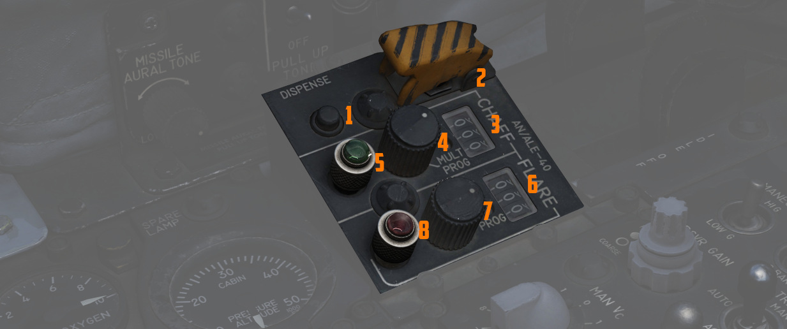

Center Section
Radar Set Control Panel

Power Knob
Five position rotary switch controlling power state of the APQ-120 Radar.
| Name | Description |
|---|---|
| OFF | Powers radar off. |
| TEST | Applies voltage to control monitor power and provides test functions 1 through 6. |
| STBY | Power applied to radar, remains in a non-transmitting standby state. |
| OPR | System is fully operational. |
| EMER | Overrides the time delay, pressure, and temperature restrictions to allow radar operation. |
Polar Switch
Controls polarization of transmitted radio frequency energy. CIR 1 and 2 should be used in the presence of rain, however if AIM-7 Missiles should be fired use CIR 1.
| Name | Description |
|---|---|
| LIN | RF energy is lineally polarized in a vertical orientation. AIM-7 default mode. |
| CIR 1 | RF energy is rotated clockwise from the vertical plane. AIM-7 can be fired. |
| CIR 2 | RF energy is rotated counterclockwise from the vertical plane. AIM-7 cannot be fired. |
Radar Range Knob
Used to select range sweep of 5, 10, 25, 50, 100, or 200 mile ranges on both radar displays. First four ranges are air-to-air intercept positions, final two are ground mapping modes only, and disengage lock-on capability. Selecting a setting illuminates the applicable range lamp, and displays the value on the radar scope upper left corner.
Maneuver Switch
Controls radar tracking response due to acceleration limits and received countermeasures and clutter. LOW G provides the velocity reject function whilst HI G allows tracking of a maneuvering target without breaking radar lockon.
| Name | Description |
|---|---|
| LOW G | Default position. Limits track response due to countermeasures and clutter. |
| HI G | Allows track loop to respond to high acceleration. Automatically engaged with CAA. |
Bar Scan Switch
Selects elevation scan pattern. In 2 bar scan, search pattern is separated by 3.75 degrees on each scan. In boresight or air to ground modes, 1 bar scan is automatically commanded.
Aspect Switch
Used to program the AIM-7 with a predetermined simulated Doppler instead of actual received Doppler, so that the WSO can provide an estimated correct speed-gate location when range isn't available.
Receiver Gain Knobs (RCVR GAIN)
Coarse (outer ring) and Fine (inner knob) gain control for the radar scope display to increase video output legibility of target returns.
Track Switch
Enables manual target tracking in heavy clutter environments, or automatic tracking under normal circumstances.
Manual
When in the MAN position, the WSO places the acquisition symbol over the intended target and triggers half-action on the Antenna hand control stick. The range strobe is positioned relative to in-range on a closing target, and the WSO selects full-action. To solidify the track, the WSO uses the Manual Vc knob to place the range strobe and target return video at the same rate of movement.
Automatic
In the AUTO position, the range and closure calculations are performed automatically. The WSO places the acquisition symbol over the target return and presses full action. Should the target maneuver in excess of the speed capability of the radar, the Maneuver switch can be set to HI G and the target reacquired.
AOJ OUT
The AOJ OUT position is used to override the acquisition on jamming function of the radar. In the event that the radar acquires a Home-on-Jam lock, the position can be selected to place the radar back into a search configuration to initiate a lock-on against the jamming target and initiate a standard angle track lock.
Display Knob
Sets the display type of the radar scope to access specific mode functionality in conjunction with the Mode knob. The types are as follows:
| Name | Description |
|---|---|
| B WIDE | Selects 120 degree B-sweep for search. Half-action places the sweep under manual Antenna hand control stick. |
| B NAR | Selects a 45 degree B-sweep sector for search, which is manually shifted with the Antenna hand control stick. |
| PPI WIDE | Selects a 120 degree wide plan position indicator sweep for MAP mode. |
| PPI NAR | Selects a 45 degree plan position indicator sweep that can be shifted with the Antenna hand control stick. |
| VI | Provides pure pursuit guidance to a locked target; a break X will appear at 1000' range. |
Manual Vc Knob
A 12 position switch used to apply estimated range rate of closure (clockwise, 0-9), or estimated opening of range (counterclockwise, 0-2) against a target in manual track mode. The numbers are multiplied by 100 m/s while closure means closing in to the F-4 and opening means the target is flying away from the F-4.
Pulse Switch
Three position switch controlling radar pulse width and pulse repetition frequency in the Air to Air radar search modes. With the APQ-120 placed in CAGE mode, short pulse operation is automatically selected. In AIR-GND modes, the pulses are automatically commanded, deactivating the switch.
| Name | Description |
|---|---|
| AUTO | Commands long pulse width and low PRF; pulse width handled automatically when target is locked. |
| LONG | Low PRF and wide pulse width, allowing maximum range detection; no track automatic pulse adjustment. |
| SHORT | Narrow pulse width with high PRF for increased close range performance. |
Mode Knob
A six position switch that determines the current base mode of operation of the radar.
| Name | Description |
|---|---|
| BST | Air to Air boresight with antenna aligned to optical sight. Permits CAGE and CAA. |
| RDR | Air to Air search mode. |
| MAP | Radar ground mapping mode. |
| AIR-GRD | Air to Ground boresight, 20 mile range against targets visually established with optical sight. |
| BEACON | Radar receives and displays signals from ground or airborne beacon transponders for navigation. |
| TV | Not used with DSCG. Deactivates AIM-7 if selected. |
Skin Track Light
Green lamp that illuminates when a track is attained with range data. In the event of HOJ or a range memory situation, the light will go off. Accompanied on the rear DSCG radar scope with the T symbol that illuminates under the same circumstances.
AN/ALE-40 Cockpit Control Unit

Ripple Switch
When positioned ON, dispenses flares at rate of ten per second until dispensers are empty, so long as flaps and speed brakes are retracted.
Dispense Button
Initiates chaff/flare dispensing as selected by Cockpit control unit and AN/ALE-40 programmer with flaps and speed brakes retracted and mode knobs out of OFF.
Counters
Indicate quantity of chaff and flare cartridges remaining, respectively.
Chaff Mode Knob
| Name | Description |
|---|---|
| OFF | Chaff system inactive. |
| SGL | A single burst commanded when dispense button pressed. |
| MULT | A salvo commanded according to program when either dispense button pressed. |
Flare Mode Knob
| Name | Description |
|---|---|
| OFF | Flare system inactive. |
| SGL | A single burst commanded when dispense button pressed. |
| MULT | A salvo commanded according to program when either dispense button pressed. |
Indicator Lights
Illuminates whenever a mode is selected on the respective countermeasure mode knob.